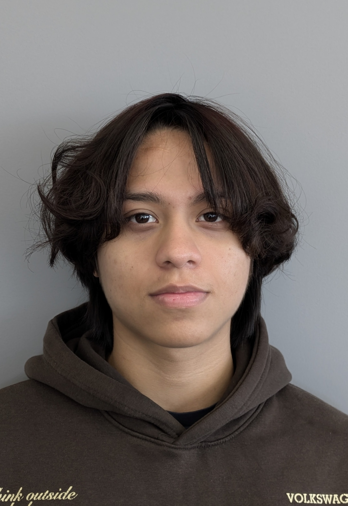
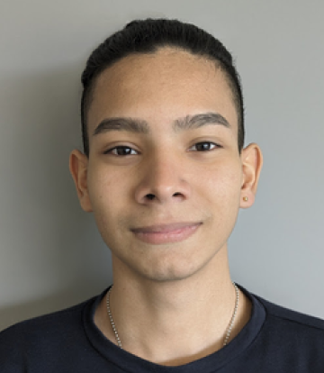

¿Qué somos?
Somos, Second Life una tienda de segunda mano que reconstruye y reutiliza equipos antiguos, promoviendo la economía verde y combatiendo la obsolescencia programada. Nuestro objetivo es reducir la contaminación global, fomentar el reciclaje de dispositivos y concienciar al público joven sobre el mundo renovable.
El desarrollo de la página web se conforma por 2 estudiantes que aspiran a un futuro sostenible y tecnologico.
| Wellynthón Wilfrido Cedeño | Yeremy Andres Rodriguez Leal |
|---|---|
| Estudiante de Sistemas Microinformáticos y Redes, con experencia en gestión e instalación de redes, montaje y mantenimiento de equipos, entusiasmado por el aprendizaje. | Estudiante de FP en Sistemas Microinformáticos y Redes, con experiencia en montaje, mantenimiento de equipos, programación y diseño gráfico. |
|  |  |
| CV Wellynthón Cedeño | CV Yeremy Rodriguez |